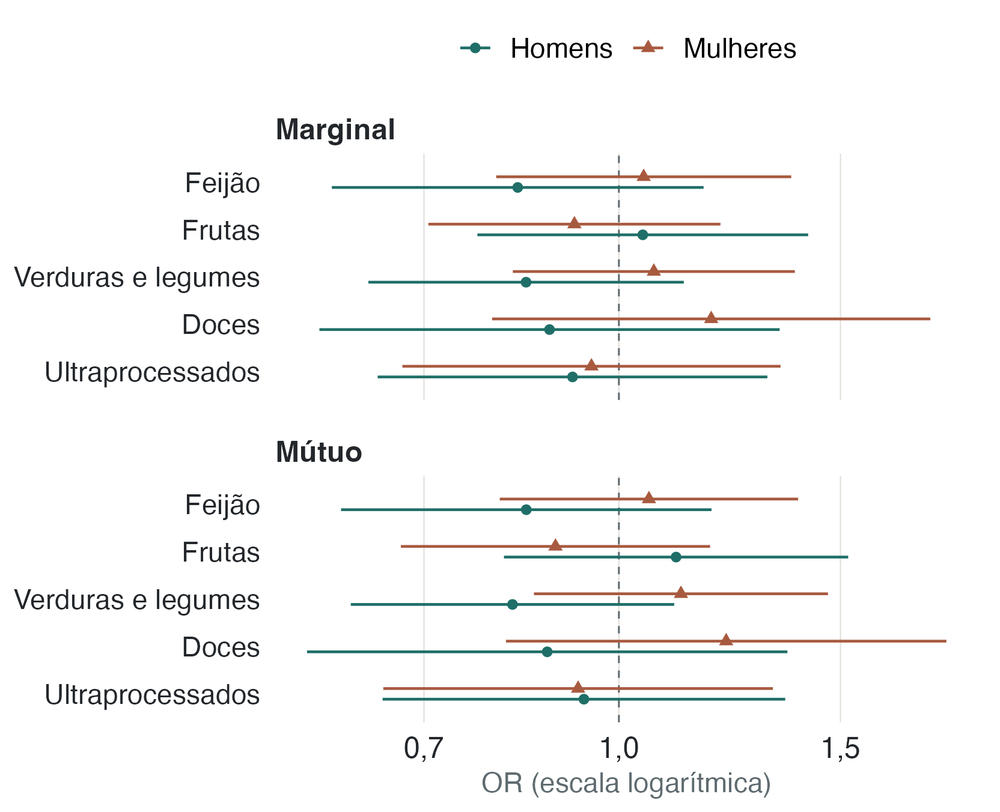
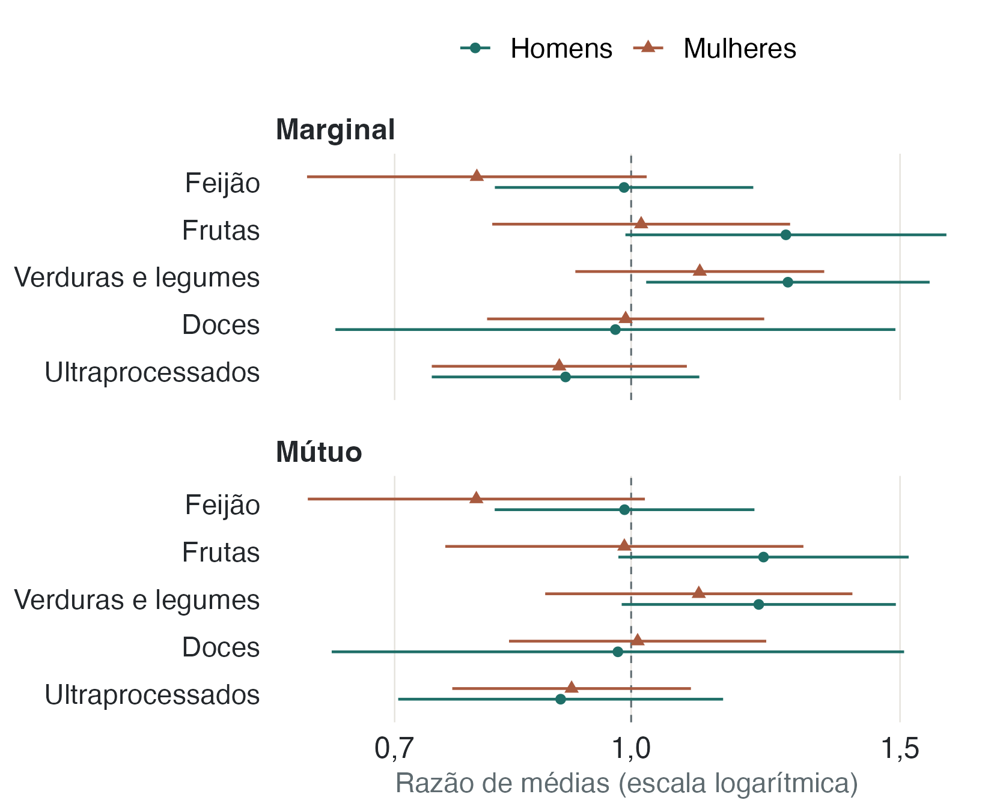
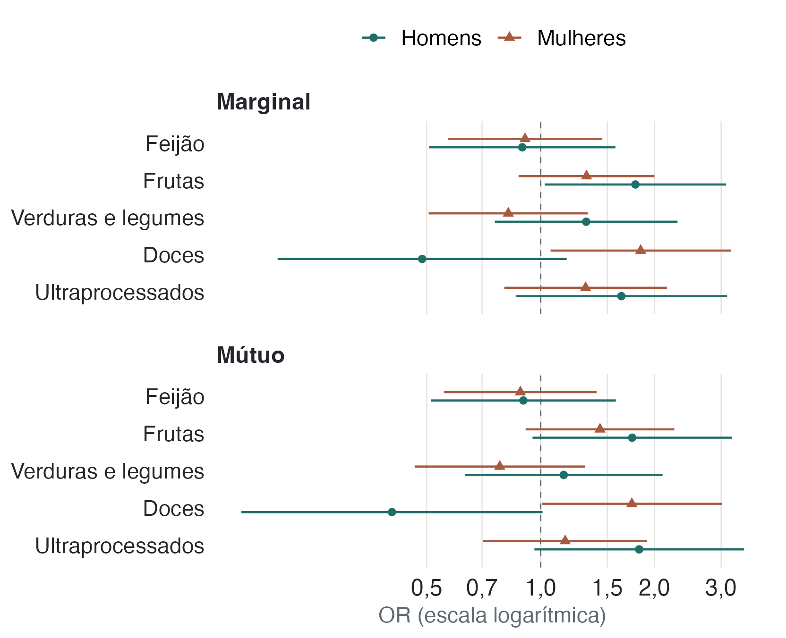

Alimentação e resultados de saúde
A análise investiga se as medidas de consumo alimentar variam junto com os resultados de saúde. Como a pesquisa mediu alimentação e saúde no mesmo período, não é possível concluir que uma cause a outra.
Na comparação inicial, algumas diferenças entre grupos apareceram. Nos modelos que consideram sexo, idade, escolaridade, renda, cor ou raça, estado civil e características do domicílio, nenhuma das cinco medidas de alimentação mostrou evidência estatística suficiente de associação com doença crônica, consultas ou internações, depois da correção para múltiplas comparações. Esse resultado foi semelhante nos dois tipos de modelo descritos abaixo.
O que as comparações iniciais mostraram
Comparamos o consumo regular de feijão, frutas, verduras e legumes, doces e ultraprocessados com três resultados de saúde: diagnóstico de doença crônica, consultas médicas e internações. Em cada grupo, foram 15 comparações. Entre todos os participantes, seis tiveram q1 abaixo de 0,05: feijão e consultas, frutas e consultas, frutas e internações, verduras e doença crônica, verduras e consultas e ultraprocessados e doença crônica.
Entre mulheres, duas das 15 comparações tiveram q abaixo de 0,05; entre homens, uma. Esses resultados iniciais não mostram, por si só, o que acontece quando levamos em conta diferenças de idade, renda e outras características, nem indicam que o consumo causou os resultados de saúde.
| Desfecho | Feijão | Frutas | Verduras e legumes | Doces | Ultraprocessados (10 itens) |
|---|---|---|---|---|---|
| Doença crônica composta | 0,497 | 0,103 | 0,031 * | 0,344 | 0,031 * |
| Consultas em 12 meses | <0,001 * | <0,001 * | <0,001 * | 0,137 | 0,217 |
| Internações em 12 meses | 0,400 | 0,031 * | 0,684 | 0,562 | 0,344 |
| Desfecho | Feijão | Frutas | Verduras e legumes | Doces | Ultraprocessados (10 itens) |
|---|---|---|---|---|---|
| Doença crônica composta | 0,714 | 0,498 | 0,094 | 0,729 | 0,132 |
| Consultas em 12 meses | 0,132 | 0,028 * | 0,047 * | 0,877 | 0,377 |
| Internações em 12 meses | 0,714 | 0,279 | 0,714 | 0,188 | 0,714 |
| Desfecho | Feijão | Frutas | Verduras e legumes | Doces | Ultraprocessados (10 itens) |
|---|---|---|---|---|---|
| Doença crônica composta | 0,335 | 0,335 | 0,490 | 0,335 | 0,335 |
| Consultas em 12 meses | 0,323 | 0,004 * | 0,141 | 0,074 | 0,705 |
| Internações em 12 meses | 0,592 | 0,179 | 0,335 | 0,123 | 0,335 |
Tabela 1. Valores q, ajustados por Benjamini-Hochberg, para as 15 comparações principais em cada grupo. O asterisco marca q < 0,05. Cada célula compara os resultados de quem consome regularmente o alimento com os de quem consome com menor frequência.
A análise exploratória compara cinco medidas de consumo alimentar com oito resultados de saúde: hipertensão, diabetes, doença do coração, AVC, depressão, câncer, indisposição frequente e sentir-se deprimido com frequência. Na vista direta, 5 das 40 comparações tinham q < 0,05; dentro de cada sexo, nenhuma.
| Desfecho | Feijão | Frutas | Verduras e legumes | Doces | Ultraprocessados (10 itens) |
|---|---|---|---|---|---|
| Hipertensão | 0,330 | 0,337 | 0,031 * | 0,088 | 0,031 * |
| Diabetes | 0,277 | 0,038 * | 0,828 | <0,001 * | 0,054 |
| Doença do coração | 0,507 | 0,354 | 0,629 | 0,924 | 0,330 |
| AVC ou derrame | 0,277 | 0,277 | 0,833 | 0,828 | 0,511 |
| Depressão (diagnóstico) | 0,025 * | 0,814 | 0,787 | 0,277 | 0,338 |
| Câncer | 0,540 | 0,540 | 0,277 | 0,712 | 0,932 |
| Indisposição frequente | 0,054 | 0,330 | 0,277 | 0,277 | 0,814 |
| Sentir-se deprimido frequente | 0,540 | 0,074 | 0,178 | 0,833 | 0,873 |
| Desfecho | Feijão | Frutas | Verduras e legumes | Doces | Ultraprocessados (10 itens) |
|---|---|---|---|---|---|
| Hipertensão | 0,089 | 0,546 | 0,062 | 0,124 | 0,062 |
| Diabetes | 0,076 | 0,076 | 0,957 | 0,062 | 0,386 |
| Doença do coração | 0,957 | 0,193 | 0,980 | 0,705 | 0,681 |
| AVC ou derrame | 0,193 | 0,193 | 0,980 | 0,681 | 0,836 |
| Depressão (diagnóstico) | 0,124 | 0,957 | 0,591 | 0,156 | 0,699 |
| Câncer | 0,705 | 0,699 | 0,119 | 0,546 | 0,957 |
| Indisposição frequente | 0,546 | 0,681 | 0,591 | 0,524 | 0,957 |
| Sentir-se deprimido frequente | 0,957 | 0,193 | 0,193 | 0,773 | 0,732 |
| Desfecho | Feijão | Frutas | Verduras e legumes | Doces | Ultraprocessados (10 itens) |
|---|---|---|---|---|---|
| Hipertensão | 0,947 | 0,968 | 0,725 | 0,725 | 0,725 |
| Diabetes | 0,947 | 0,725 | 0,947 | 0,097 | 0,330 |
| Doença do coração | 0,707 | 0,707 | 0,707 | 0,725 | 0,707 |
| AVC ou derrame | 0,941 | 0,727 | 0,941 | 0,996 | 0,697 |
| Depressão (diagnóstico) | 0,697 | 0,968 | 0,697 | 0,968 | 0,725 |
| Câncer | 0,697 | 0,968 | 0,947 | 0,941 | 0,968 |
| Indisposição frequente | 0,330 | 0,941 | 0,651 | 0,697 | 0,968 |
| Sentir-se deprimido frequente | 0,947 | 0,330 | 0,697 | 0,996 | 0,725 |
O que mostram os modelos ajustados
Usamos modelos de regressão para comparar os resultados de saúde entre grupos, considerando sexo, idade, escolaridade, renda, cor ou raça, estado civil e características do domicílio. Para doença crônica e internação, que são registradas como sim ou não, usamos regressão quasi-binomial. Para a contagem de consultas, usamos regressão quasi-Poisson. No ajuste marginal, cada medida de consumo alimentar entra separadamente; no mútuo, as cinco entram juntas.
Para doença crônica e internação, os modelos estimam uma razão de chances (odds ratio, OR). Aqui, chances é um termo estatístico: a relação entre a probabilidade de o evento ocorrer e a de não ocorrer. O OR compara essa relação entre grupos; não representa diretamente uma diferença de probabilidade. Para consultas, os modelos comparam as médias. Em ambas as medidas, 1 indica que as estimativas são iguais entre os grupos. Os intervalos de confiança mostram a incerteza; a conclusão também considera a correção para múltiplos testes.

| Exposição | Homens | Mulheres |
|---|---|---|
| Feijão | 0,84 (0,60–1,18) | 1,06 (0,80–1,39) |
| Frutas | 1,11 (0,81–1,52) | 0,89 (0,67–1,18) |
| Verduras e legumes | 0,82 (0,61–1,11) | 1,12 (0,86–1,47) |
| Doces | 0,88 (0,57–1,36) | 1,22 (0,81–1,82) |
| Ultraprocessados (10 itens) | 0,94 (0,65–1,36) | 0,93 (0,65–1,33) |

| Exposição | Homens | Mulheres |
|---|---|---|
| Feijão | 0,99 (0,81–1,20) | 0,79 (0,61–1,02) |
| Frutas | 1,22 (0,98–1,52) | 0,99 (0,76–1,30) |
| Verduras e legumes | 1,21 (0,99–1,49) | 1,11 (0,88–1,40) |
| Doces | 0,98 (0,64–1,51) | 1,01 (0,83–1,23) |
| Ultraprocessados (10 itens) | 0,90 (0,70–1,15) | 0,91 (0,76–1,09) |

| Exposição | Homens | Mulheres |
|---|---|---|
| Feijão | 0,90 (0,51–1,58) | 0,88 (0,56–1,41) |
| Frutas | 1,75 (0,95–3,20) | 1,44 (0,91–2,26) |
| Verduras e legumes | 1,15 (0,63–2,10) | 0,78 (0,46–1,31) |
| Doces | 0,40 (0,16–1,01) | 1,74 (1,01–3,01) |
| Ultraprocessados (10 itens) | 1,82 (0,96–3,45) | 1,16 (0,70–1,91) |
Doces e internações: um sinal incerto
No modelo mútuo, a razão de chances estimada para internação, ao comparar homens que relataram comer doces em cinco ou mais dias por semana com os que relataram menor frequência, foi 0,40 (IC 95% 0,16–1,01). Entre as mulheres, a estimativa correspondente foi 1,74 (1,01–3,01). A comparação formal entre esses resultados é o teste de interação entre consumo de doces e sexo: OR 4,31 (1,47–12,62), com p = 0,008. Após a correção para múltiplos testes, q = 0,079, acima do limite de 0,05 adotado no estudo.
As estimativas por sexo apontam em direções opostas, mas o teste de interação não passou o critério corrigido. Assim, não há evidência suficiente para concluir que a associação difira entre homens e mulheres. O resultado é uma hipótese a investigar, não um achado confirmado.
Por que o ajuste muda a leitura. Sexo, idade, escolaridade e renda se associam tanto ao que as pessoas comem quanto aos desfechos. Quando essas características entram no modelo, parte do sinal da análise simples desaparece. Isso é compatível com confundimento, embora o ajuste também possa reduzir a precisão das estimativas.
O que um resultado não significativo significa. Não encontrar evidência estatística suficiente não prova que uma associação não exista. Significa que, com este recorte, estas medidas e a precisão dos dados, a análise não permite confirmá-la.
Vários testes. Os 174 testes descritivos e exploratórios incluem 45 comparações principais, 120 exploratórias e nove entre homens e mulheres. Nos modelos, os testes de cada resultado e tipo de ajuste são corrigidos em conjuntos separados.
Notas de rodapé
O valor q é o valor de p ajustado pelo procedimento de Benjamini-Hochberg para levar em conta os vários testes feitos dentro de cada conjunto de comparações.↩︎